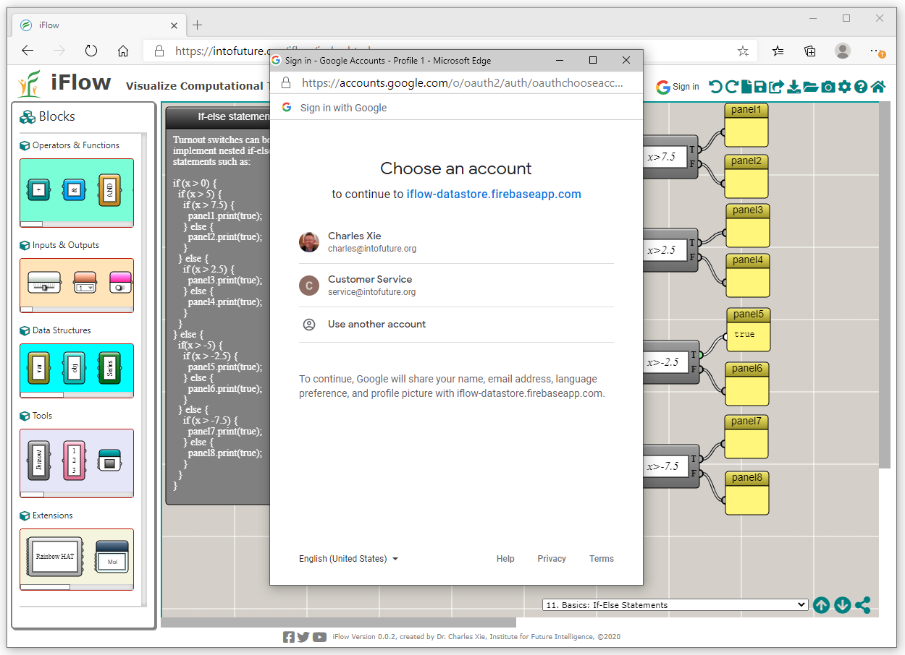
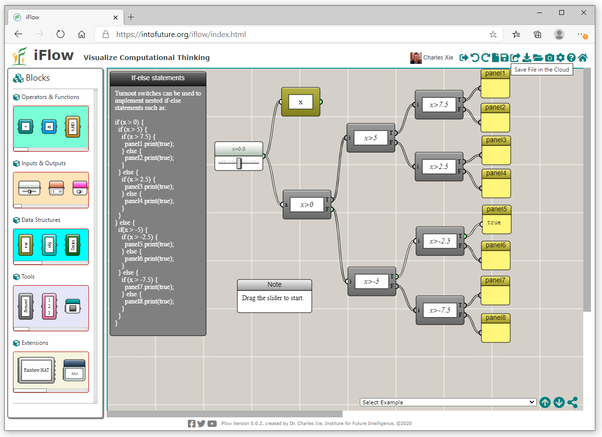
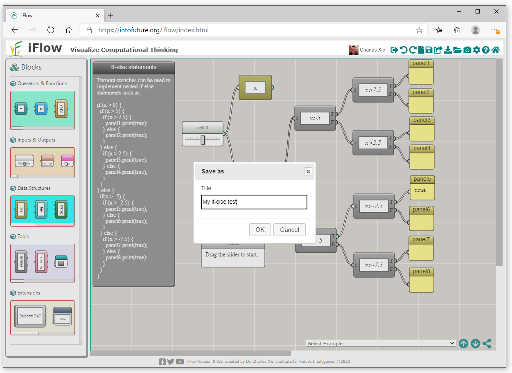
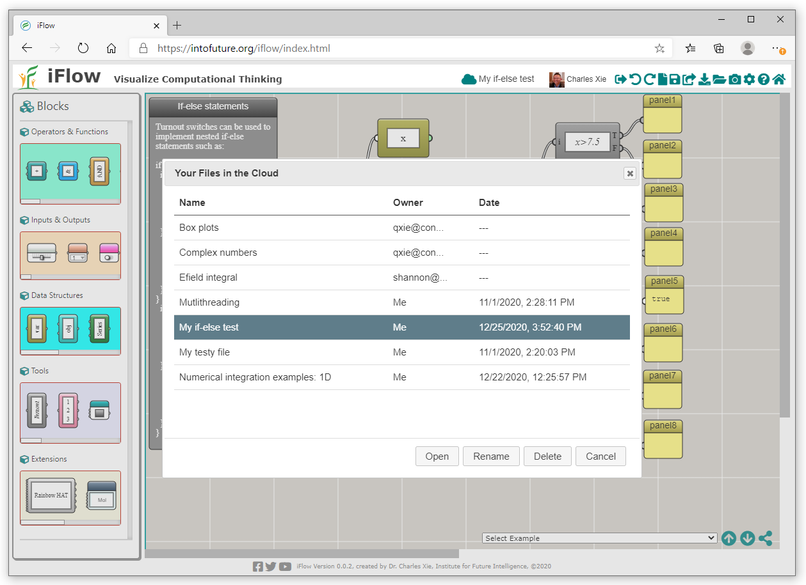

Store Your iFlow Files on the Cloud
Sign in with Google, save and manage your iFlow files in the cloud, then open them from any device.
Cloud storage of your iFlow files allows you to open them from any device and share them with anyone. First, you have to sign in using the "Google Sign In" button on the top tool bar of iFlow. Once you click the button, you will see the following window that prompts you to choose a Google account to log in:

Once you sign in, you can use the Save button to save a file on the cloud. The position of the Save button is shown in the following screenshot:

Once you click the Save button, you will be prompted to type a title for the file (you should make it as succinctly descriptive as possible so that you can remember the purpose of the file later):

After a file is saved to the cloud, you can click your user logo or name on the tool bar to open a list of all the files in your account:

With the above dialog window, you can open a selected file, change the title, or delete it.
← Back to iFlow